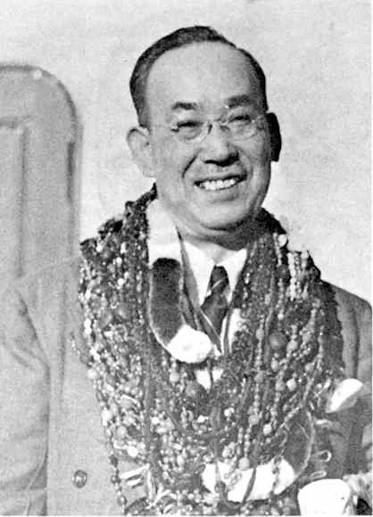
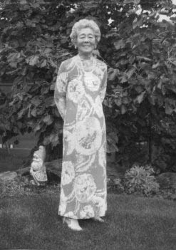
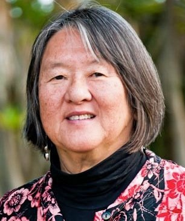
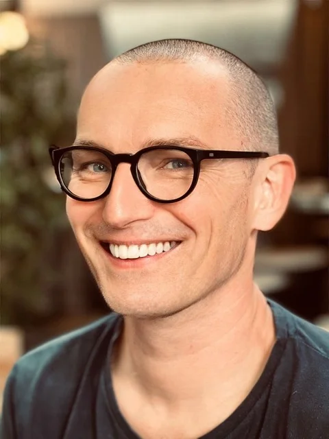

Mikao Usui (1865–1926)
Założyciel praktyki, którą znamy jako Reiki, żył w Japonii w czasach wielkiej ekspansji i przemian kulturowych. Był pracowitym i zdeterminowanym dzieckiem. Wchodząc w dorosłość, dążył do odnalezienia swojej prawdziwej drogi.
Został pochłonięty pytaniem: Jak wielcy mistrzowie duchowi uzdrawiali? To pytanie skłoniło go do podróży i studiowania różnych tekstów, co ostatecznie doprowadziło go do wejścia na świętą górę niedaleko Kioto – górę Kurama, gdzie pościł i medytował przez 21 dni. Pod koniec tego okresu przygotowania doznał przebudzenia do metody Reiki.
Po przetestowaniu tej metody na sobie, rodzinie i przyjaciołach, zaczął dzielić się swoim odkryciem z innymi. Z czasem jego sława rosła – przyciągał wielu uczniów i uzdrowił wiele osób.

Chujiro Hayashi (1880–1940)
Oddany uczeń Mikao Usui, stworzył klinikę oraz ośrodek badawczy Metody Reiki Usui. Na podstawie swojej praktyki klinicznej opracował podręcznik leczenia, który wskazywał konkretne pozycje rąk dla wielu chorób. Jego ośrodek otworzył w latach 30. filie w całej Japonii i szkolił uczniów – prawdopodobnie tysiące.
Chujiro Hayashi był emerytowanym oficerem marynarki, który poświęcił resztę życia sztuce uzdrawiania Reiki. Gdy w Japonii wywierano na niego presję, by zaangażował się w działania wojenne, zdecydował się odejść z ciała, zamiast uczestniczyć w zniszczeniach wojny.
W 1935 roku, pięć lat przed jego odejściem, ceniony tokijski chirurg, dr Tomosuke Maeda, skierował młodą kobietę z Hawajów do kliniki Hayashiego. Nikt wtedy nie przypuszczał, że zostanie ona jego główną uczennicą i w 1936 roku rozpocznie proces wprowadzania Reiki na Zachód.

Hawayo Takata (1900–1980)
Urodzona na Hawajach w rodzinie japońskich imigrantów. Po ciężkiej chorobie trafiła do kliniki Chujiro Hayashi w Japonii, gdzie dzięki Reiki odzyskała zdrowie i została jego uczennicą. Wprowadziła Reiki na Zachód, upraszczając i dostosowując nauki do nowej kultury. Przed śmiercią wybrała swoją wnuczkę jako następczynię.
W latach 1937–1938 Chujiro Hayashi przebywał na Hawajach na zaproszenie Hawayo Takaty. Razem prowadzili seminaria Reiki w japońskich społecznościach na wyspach Kaua’i i O’ahu. Przed opuszczeniem Hawajów ukończył i inicjował ją na Mistrza Reiki oraz powierzył jej misję kontynuowania praktyki i nauczania Metody Uzdrawiania Reiki wg Usui.
Takata inicjowała 22 mistrzów Reiki i jej życzeniem było, aby jej wnuczka Phyllis Furumoto została jej następczynią.

Phyllis Lei Furumoto (1948–2019)
Wnuczka Hawayo Takata, wprowadzona w Reiki jako dziecko. Początkowo nie interesowała się tą ścieżką, lecz w wieku 30 lat zdecydowała się jej poświęcić. W 1980 roku została następczynią swojej babci. Współtworzyła Reiki Alliance – organizację Mistrzów Reiki.
Od początku lat 80. do lat 90. nauczanie Reiki dynamicznie rozprzestrzeniło się na całym świecie. Równocześnie pojawiły się liczne zmiany w pierwotnej praktyce przekazanej przez Hawayo Takatę. W odpowiedzi na powstałe zamieszanie społeczność Reiki Alliance poprosiła w 1992 roku Phyllis Furumoto o zdefiniowanie praktyki, którą otrzymała od swojej babci.
Phyllis i Paul Mitchell określili kluczowe elementy systemu uzdrawiania i współpracowali z mistrzami na całym świecie, pogłębiając zrozumienie wartości i znaczenia tej praktyki.
W swoim domu, w obecności kręgu mistrzów, Phyllis Furumoto na kilka tygodni przed śmiercią uznała i ogłosiła Johannesa Reindla swoim następcą – Wielkim Mistrzem Linii Przekazu Usui Shiki Ryoho w linii: Usui, Hayashi, Takata i Furumoto.

Johannes Reindl
Urodzony w 1977 roku w Austrii. Reiki poznał jako dziecko, a w wieku 17 lat rozpoczął praktykę, odczuwając, że to jego droga. Przez lata rozwijał się jako tłumacz języka migowego i nauczyciel, jednocześnie aktywnie służąc społeczności Reiki.
Po wielu latach praktyki Reiki, w październiku 2013 roku poprosił Phyllis Furumoto, aby został jej uczniem i przygotowywał się pod jej opieką do mistrzostwa. Po 4 latach został inicjowany w Kioto na Mistrza Reiki. W tym czasie był także częścią zespołu przygotowującego proces sukcesji.
W 2019 roku Phyllis zaprosiła go do Arizony jako tłumacza języka francuskiego – nie wiedział wtedy, że rozpozna w nim swojego następcę. Zdecydował się przyjąć stanowisko Wielkiego Mistrza i kontynuuje misję Reiki na całym świecie.
